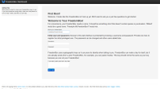
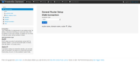

A look at FreedomBox 0.2
The FreedomBox project recently made its second release, providing an installable "home server" distribution that is designed to offer secure and self-hosted equivalents to many commercial cloud-based services. Version 0.2 is a significant step forward from 0.1, as it is the first to provide usable applications. It also marks the functional debut of FreedomBox's new administrative interface, which tackles some important privacy tasks in addition to basic setup duties.
Binary builds are available for the Raspberry Pi, the DreamPlug line of plug computers, and the VirtualBox emulator. I tested the new release on VirtualBox (for the sake of simplicity); while VirtualBox is often a less-than-ideal testbed for desktop distributions, it fits the bill nicely for FreedomBox, which is intentionally geared toward running on low-resource devices.
FreedomBox is configured to start up a number of services at boot time, including the project's new Plinth administration interface. As befits a distribution that originally targeted headless mini-servers, Plinth and essentially all other administrative features are web-based. It is convenient, although it also means VirtualBox users will need to ensure that host-to-guest networking is configured correctly for the virtual machine before getting started.

At first run, Plinth prompts the user to create a unique server
name for the FreedomBox, to create at least one user account, and
optionally to load in an existing X.509 certificate. The setup
scripts will create a fresh certificate for new installs; this
existing-certificate option is available to help users migrating their accounts and data
from another FreedomBox deployment. There are still a few pieces
missing from Plinth; perhaps most notable is the "TODO: explain
all this cert stuff to the user
" message that adorns the first
page shown after creating the new user account, which might not fill
new users with confidence. Nevertheless, setup is actually
painless, and the user is soon presented with the basic Plinth
dashboard.
FreedomBox 0.2 runs several application services out-of-the-box (no pun intended): the JWChat XMPP-based instant messaging server, Tor, and Privoxy web proxy. There is also support for using a FreedomBox as a basic gateway router (including serving as a WiFi access point), plus lower-level network services like DNS resolution, LDAP, and Avahi service discovery. Considerably more functionality (such as WebDAV file sharing, online calendaring, and collaborative text editing) is provided through ownCloud, which is an optional install that has its own web administration interface.
The router and Internet-access functions of FreedomBox seem to get considerably less press than the self-hosted web applications do, perhaps because so many households already have a router or access point.
But the routing and application functions are deeply intertwined; one of the key reasons that FreedomBox is designed to run on a home server is that storing one's data at home offers it better legal protection than keeping it on a shared-hosting, co-located, or cloud server. The desire to keep everything running on the home server imposes some technical requirements: users want their data accessible from the home network and from outside, which means configuring access from internal and external networks. By making the FreedomBox serve as the LAN router, handling DHCP and firewall duties—rather than having it attempt to work with a myriad of possible network configurations—the problem is simplified.
But even with the FreedomBox serving as the gateway between the user's LAN and the Internet at large, there are still some tricky problems to be solved, such as Dynamic DNS to provide access to the server in spite of the variable IP addresses handed out by many ISPs.
On that front, FreedomBox is not yet foolproof: the 0.2 documentation also includes instructions for installing client software for the PageKite Dynamic DNS provider, but users then must depend on their PageKite account remaining up and operational, even (in the extreme case) in the face of the legal threats that make hosting one's functionality on a remote server inadvisable. Concerns about depending on PageKite for access might sound hyperbolic, were it not for the fact that several links on the VirtualBox page of the FreedomBox wiki point to PageKite sites that are not reachable at present. There may simply be no easy solution on the horizon, of course, at least with IPv4's address scarcity.
Otherwise, FreedomBox's ability to replace a gateway router is still a work in progress in this release. General router functionality is present, though several features (such as WiFi hotspot and firewall configuration) are not accessible through the Plinth interface. The underlying operating system is Debian-based, of course, so users with Debian experience can work around most of the limitations from a shell prompt; the programs selected are standard-issue (e.g., dnsmasq).
The addition of Tor in 0.2 is new, although FreedomBox's Tor is configured to serve as a bridge, which means that other Tor users can use it to connect to the Tor network, but only if the FreedomBox user shares the bridge's IP address with them. It is not a public Tor relay, and it does not automatically route outgoing traffic over Tor.

As for the application-level services, there are again several places in the Plinth user interface where the appropriate menu items and hooks are in place to configure or activate services that have not made it into version 0.2. This is to be expected, and it at least gives one the opportunity to see what direction the project is heading. Entries like "HTTPS Everywhere" and "Photo Gallery" (reputed to be MediaGoblin) indicate features still in development. Already usable is the JWChat XMPP server, ownCloud, and ikiwiki, although the ownCloud and ikiwiki packages must be installed from the command line, and ikiwiki is not accessible from the Plinth interface. It is also important to note that ownCloud is a rather space-intensive installation; the Debian packages it pulls in add up to a full gigabyte, not including whatever files the user hopes to store.
Both ownCloud and ikiwiki need to be manually configured in this release, which is another task that future FreedomBox releases will need to tackle in order to make the distribution user-friendly. Currently the user has to separately hunt down instructions for each application, then set up database users, version control, and other details that could be pre-configured (or at least be given sensible defaults; not everyone will correctly guess what to put in some of the blanks, like what ownCloud expects its database to be named or what the correct name for the database host should be). In general, the documentation in 0.2 needs work, mostly for missing content; the ownCloud and ikiwiki setup processes are simply the most egregious omissions.
That said, the actual applications supplied in 0.2 are a solid, feature-filled set—most users will find them up to the task of replacing commercial cloud-based services. The lack of a blogging application is probably the most noticeable shortcoming (considering how many robust options are out there), although what any individual user finds the most important will vary. Some may care about microblogging and social media, others about webmail, others about video chat. To spend any length of time coming up with possible services that FreedomBox could offer is to realize just how broad and varied the problem is. Even if viable free-software offerings were available for every task (and some people might argue that there are not yet viable options for every category), there is no one-size-fits-all recipe for what belongs on a home server.
The best that FreedomBox can do is to prioritize what its users are actually asking for and try to keep each release stable and relatively easy to use. For the most part, the 0.2 release showcases good work in these areas, but things will only get more challenging as the project moves forward. Consider the complexity of all of those applications, for example. As of right now, one must separately create or manage username/password credentials for the operating system itself, for FreedomBox, for the XMPP service, for ownCloud, for ownCloud's MySQL database, for PageKite, and for ikiwiki. And every additional service adds more—unless, that is, FreedomBox attempts to consolidate them—an approach that would mean either risking security or undertaking a great many patch sets against the upstream applications.
Some of the complexity could be dealt with by simply relying on more and more ownCloud "apps" for functionality (and there is certainly a growing list of ownCloud apps available). A downside to that approach, of course, is putting too many eggs in one basket, which is not always the best idea where privacy and security are concerned. Security updates are another area where decisions remain unmade. The project will have security updates available for its packages through the normal Debian mechanisms; the possibility of automatically installing them has been debated.
It will also be interesting to see where future FreedomBox releases go in terms of Tor and related privacy-protection measures. Routing all traffic over Tor has been discussed, but there are other options as well. It would, for instance, be possible for FreedomBox to configure applications to run as Tor hidden services—although doing so comes at the cost of additional complexity. Another feature included in 0.2 is support for LXC containers; containerization has a number of potential benefits, among them safeguarding against information leaks between applications. It remains to be seen how FreedomBox will use containers in practice.
All things considered, FreedomBox 0.2 showcases some important
progress. Ultimately, FreedomBox needs to be a more plug-and-play
server option than merely setting up a fresh Debian box running the
same services. Plinth does a decent job of imposing sensible order on
the array of available services—arguably better than the web
administration interfaces of DD-WRT and the like. If the project can
maintain that level of usability as the number of supported services
grows, it will be an excellent turnkey-server distribution.
| Index entries for this article | |
|---|---|
| Security | Distributions |
| Security | Home network |
| Security | Internet |
Posted May 30, 2014 3:53 UTC (Fri)
by dlang (guest, #313)
[Link]
This can be as crude as sending an e-mail to several outside accounts and looking at the header information These can be free accounts.
a bunch of different people could host websites that the home system periodically report it's IP to, and the user can then look at them.
DDNS is the slickest way to do it, but if you are concerned about the reliability, cost, or legal reliability of DDNS providers, setup your own fallback method.
Posted May 30, 2014 8:17 UTC (Fri)
by gareuselesinge (guest, #66189)
[Link] (1 responses)
I guess the editor wants to fix this.
Posted Jun 3, 2014 17:38 UTC (Tue)
by njwhite (subscriber, #51848)
[Link]
Posted Jul 21, 2014 13:17 UTC (Mon)
by jaromil (guest, #97970)
[Link]
Thanks for this article, insightful and precise.
Readers might also find interesting to know about Dowse, a project we started this year at Dyne.org because of the hiatus in freedombox development and their choices on its architecture and functioning.
Dowse is different because, besides focusing more on gateway functionality instead of self-hosted services, it introduces an event-driven approach to network usage and a modular yet minimal architecture thought by developers rather than sysadmins.
A look at FreedomBox 0.2
A look at FreedomBox 0.2
From this article: ''...the JWChat XMPP-based instant messaging server''.
A look at FreedomBox 0.2
A look at FreedomBox 0.2